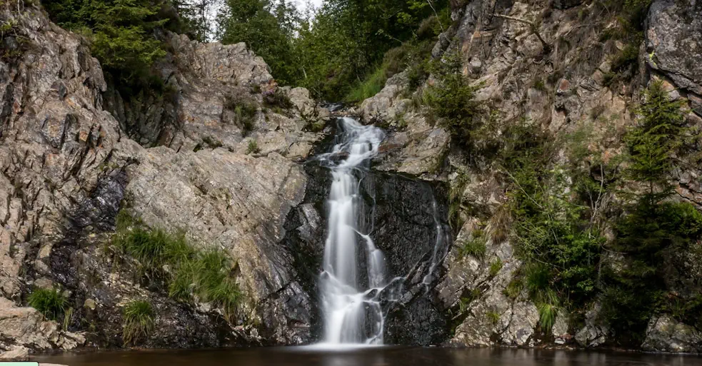

Zondag
18 januari willen we graag met een groep naar de Belgische Ardennen gaan trailrunnen en
een "eXtra trail" bij Malmedy gaan volgen
We starten bij camping Du Moulin, Rte de la Vallée 36, 4960 Malmedy, België
Voorstel zijn drie afstanden 18km, 27km en 40km. De routes zijn aangepast zodat we allemaal kunnen starten
bij de camping.
Na afloop kunnen we iets nuttigen bij de horeca van de camping. Er zijn ook mogelijkheden om te douchen voor
1 euro.
Natuurlijk gaan we (net zoals vorige jaren) zoveel als mogelijk carpoolen.
Wie heeft er zin om mee te gaan?
- 40 km — start om 09:00 — info: Olav
- 27 km — start om 11:00 — info: Janneke
- 18 km — start om 12:00 — info: Ronald / Selma